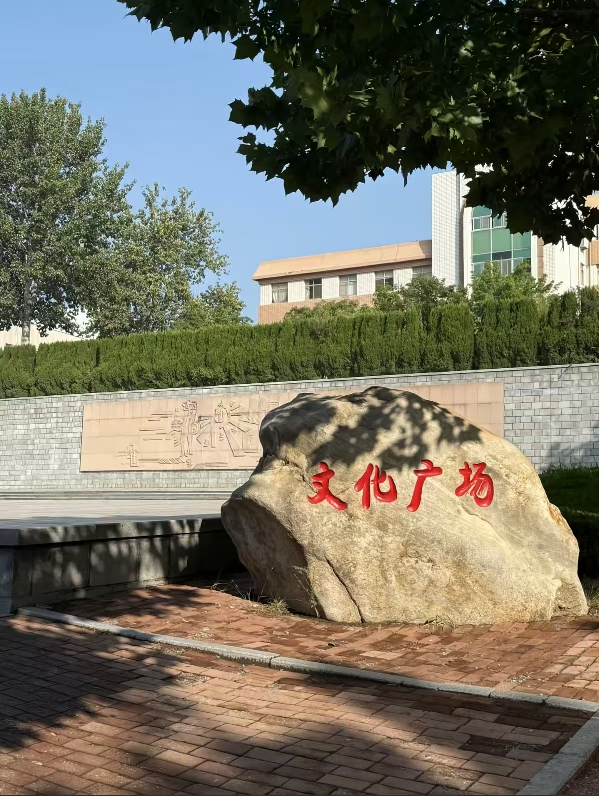

深秋的鲁东大学，是一幅被时光浸染的油画。从北区东门步入，两排巍峨的法国梧桐撑起金色的穹顶，脚下落叶沙沙，每一步都像踩在季节的韵律上。沿着红砖路向南，图书馆在梧桐枝丫间显现它庄重的轮廓，爬山虎为灰墙披上斑斓的彩衣，深红、赭石、墨绿交织，风过时叶片翻飞如蝶。
穿过连通南北校区的隧道，豁然开朗处，乳子湖像一颗明珠镶嵌在校园腹地。湖水倒映着蓝天白云和岸边垂柳，黑天鹅悠然划开涟漪，惊扰了水中的云影天光。环湖路上，栾树撑起一簇簇粉红的蒴果，像举着小小的火炬。登上综合楼顶层远眺，昆嵛山余脉在远处勾勒出青黛色的曲线，近处红顶教学楼错落有致地掩映在葱茏草木间。
这里的四季各有其美：春日樱花如雪，夏日梧桐成荫，秋日银杏铺金，冬日松柏傲雪。每一处转角都可能遇见一树花开，一方绿意，或是一段镌刻着岁月故事的老墙。这片山海之间的园林学府，不仅孕育着学术的繁花，更以它从容的自然之美，滋养着每一个在此求学的灵魂。
如果说鲁东大学的秋日是热烈的油画，那么它的春夏则是一幅清新生动的水彩画。校园的灵韵，大半萃于乳子湖。春水初涨，湖面宛若一块温润的碧玉，沿岸垂柳抽出新绿，万千丝绦轻点水面，漾开圈圈涟漪。黑天鹅夫妇领着毛茸茸的幼雏悠然巡游，与湖心亭的倒影相映成趣，构成一幅恬静的图卷。
目光越过湖面，南区的人文楼群在蓊郁树冠后显露着颇具现代感的线条。而信步向北区，则是另一番景象。那些爬满常春藤的古老墙垣，在春日暖阳下斑驳陆离，无声诉说着岁月的沉淀。梧桐大道在此刻换上了嫩绿的新装，阳光透过繁茂的枝叶，洒下细碎跳跃的光斑。
这里的风物总与山海相连。漫步校园至高处，湿润的、带着咸味的海风便会拂面而来，远眺之处，昆嵛山的青黛与天际线融为一体。四季在此流转不息：春有樱花如雪，夏有绿荫如盖，秋有银杏铺金，冬有松柏傲霜。每一处风景都不仅是一幅画面，更是一种心境，让山海之间的这片学问之地，充满了自然滋养的诗意与远离尘嚣的宁静。

